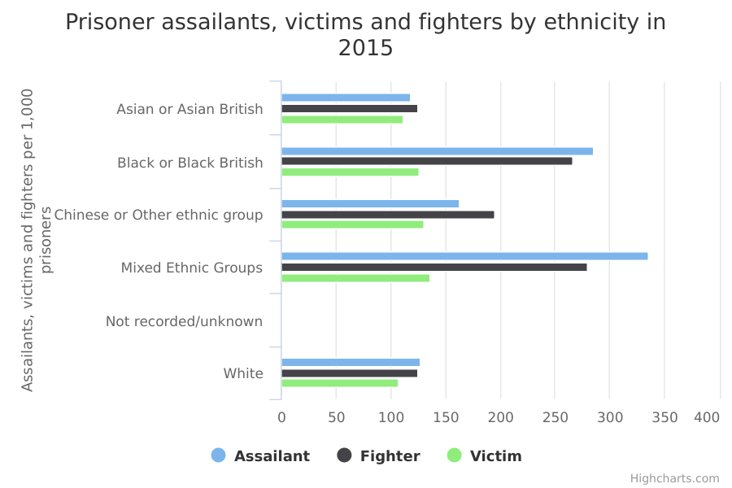

Violence involving prisoners
The main facts and figures show that:
-
prison violence has recently increased for the entire prison population, with a 33% increase in incidents involving assailants in 2015 compared to 2014
-
between 2011 and 2015, there was an increase in all ethnic groups in violent incidents involving assailants
-
the Chinese or other ethnic group included the fewest number of assailants in 2015, but the largest relative increase, with twice as many assailants as in 2011
-
while Black prisoners accounted for the second largest number of assailants, that ethnic group saw the smallest increase in such incidents from 2011 to 2015
Things you need to know
The data shows the number of violent incidents per 1,000, so individual prisoners were in many cases involved in more than one violent incident.
The data doesn’t include assaults on prison staff or visitors.
Estimates based on a larger number of respondents are generally more reliable. Therefore, the smaller numbers of respondents from ethnic minority backgrounds mean that estimates for these groups are less reliable than estimates for White people.
What the data measures
This data breaks down the number of violent incidents per 1,000 prisoners in England and Wales by ethnicity for each year from 2011 to 2015. There are separate breakdowns for the different roles (assailant, fighter or victim) which the prisoner plays in the violent incident.
Assailants are defined as prisoners who attack another prisoner but aren’t attacked back. Victims are prisoners assaulted by another prisoner but who don’t react violently. Fighters are prisoners involved in a violent incident where they and one or more prisoners use violence.
The data comes from the Incident Reporting System of the National Offender Management Service (NOMS).
Why these ethnic categories were chosen
For this data, the number of incidents recorded (the ‘sample size’) was too small to draw any meaningful conclusions for detailed ethnic categories. Therefore, the data is broken down into the following 5 broad groups:
-
White
-
Mixed/Multiple ethnic groups
-
Asian/Asian British
-
Black/African/Caribbean/Black British
-
Chinese and other
Violence involving prisoners in custody

View the numbers in a table
| Assailant | Fighter | Victim | ||||
| White | 8026 | 127 | 7905 | 125.1 | 6761 | 107 |
|---|---|---|---|---|---|---|
| Asian or Asian British | 810 | 117.9 | 858 | 124.9 | 769 | 111.9 |
| Black or Black British | 3017 | 285.3 | 2817 | 266.4 | 1335 | 126.3 |
| Mixed Ethnic Groups | 1177 | 335.5 | 980 | 279.3 | 475 | 135.4 |
| Chinese or Other ethnic group | 160 | 163.1 | 191 | 194.7 | 128 | 130.5 |
| Not recorded/unknown | 60 | NA | 50 | NA | 48 | NA |
Summary
This data shows that:
-
prisoners in the Mixed ethnic group were more likely than any other group to be assailants, victims or fighters in 2015
-
Black prisoners were the second most likely ethnic group to be assailants or fighters in 2015
-
in 2015, Asians were least likely to be assailants or fighters, and White prisoners least likely to be victims
Methodology and data type
Purpose Of Data Source
Admin data used for internal management information
Methodology
Rates by ethnicity have been taken from the NOMS Equalities Statistics bulletin. Numbers of incidents have been taken from the Ministry of Justice’s Safety in Custody statistics bulletin, which covers a longer time period.
To calculate the prisoner population typically, a 12-month average was used where this data was accessible. As this data was not accessible for the prisoner population by age or by ethnicity, quarterly data was used to calculate the prisoner population.
Race is based on self-reporting by prisoners and has not been independently validated. It is based on recorded ethnicity within the prison administrative system. About 95% of prisoners report their ethnicity for each year within the time series.
Admin data sources reported as recorded. Information is provided by prisons, signed off locally. Substantial scrutiny of the data is undertaken by Data Wardens, however as with all large administrative data sources, some inherent inaccuracy may exist.
Data type
Admin data
Suppression rules
Values of 2 or fewer are suppressed in relation to individuals (not incidents, where no disclosure applies).
Estimation
Rates per 1,000 to 1 decimal place
Further technical information
Publishing details
-
Ministry of Justice
-
24 November 2016
-
24 November 2016
-
30 November 2017
-
Annual